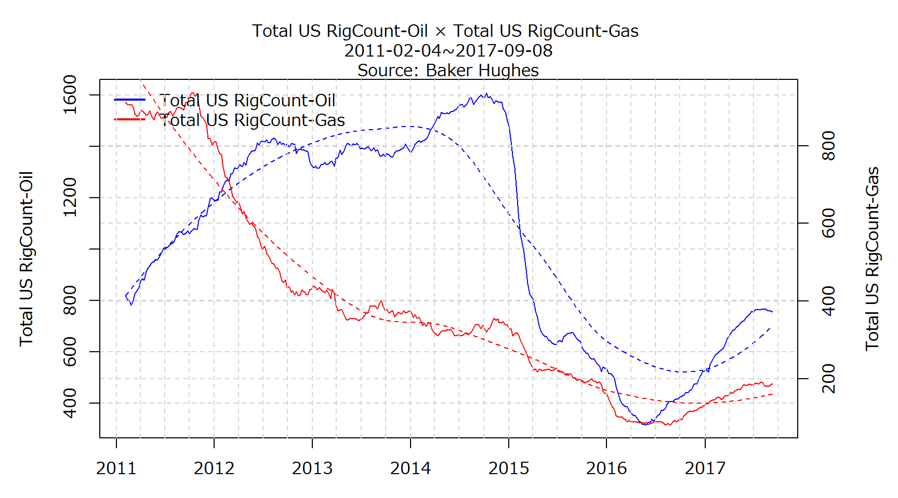
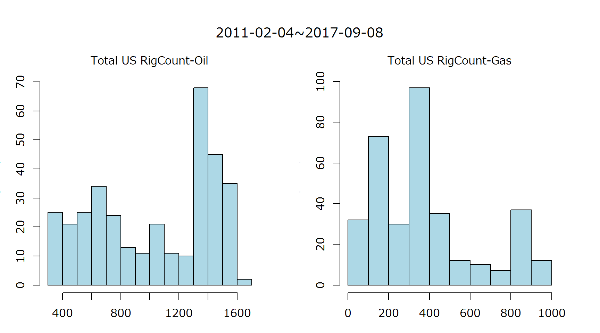

- タイトル : Baker Hughes:North America Rig Count-Week over Week:2017-08-11:Total US RigCount-Oil:3 , Total US RigCount-Gas:-8
- データ出所 : Baker Hughes
- Source https://www.bakerhughes.com/


## 2011-02-04~2017-08-11
##
## Total US RigCount-Oil Total US RigCount-Gas
## Min. : 316 Min. : 81.0
## 1st Qu.: 645 1st Qu.:189.0
## Median :1112 Median :338.0
## Mean :1032 Mean :384.5
## 3rd Qu.:1395 3rd Qu.:448.0
## Max. :1609 Max. :936.0
## vars n mean sd median trimmed mad min max range skew kurtosis se
## Total US RigCount-Oil 1 341 1032.43 410.86 1112 1048.44 469.98 316 1609 1293 -0.28 -1.44 22.25
## Total US RigCount-Gas 2 341 384.55 252.54 338 357.43 216.46 81 936 855 0.90 -0.29 13.68
## Total US RigCount-Oil Total US RigCount-Gas
## nbr.val 341.0000000 341.0000000
## nbr.null 0.0000000 0.0000000
## nbr.na 0.0000000 0.0000000
## min 316.0000000 81.0000000
## max 1609.0000000 936.0000000
## range 1293.0000000 855.0000000
## sum 352059.0000000 131130.0000000
## median 1112.0000000 338.0000000
## mean 1032.4310850 384.5454545
## SE.mean 22.2495490 13.6757412
## CI.mean.0.95 43.7641006 26.8997143
## var 168809.4695015 63775.8310160
## std.dev 410.8642957 252.5387713
## coef.var 0.3979581 0.6567202
## $`Total US RigCount-Oil`
##
## Augmented Dickey-Fuller Test
##
## data: newX[, i]
## Dickey-Fuller = -2.4464, Lag order = 6, p-value = 0.3884
## alternative hypothesis: stationary
##
##
## $`Total US RigCount-Gas`
##
## Augmented Dickey-Fuller Test
##
## data: newX[, i]
## Dickey-Fuller = -1.2748, Lag order = 6, p-value = 0.8826
## alternative hypothesis: stationary
前週差がプラスからマイナス又はその逆へと変化した週:前週差±0は前週差プラスとする。 / Each Turning Point
Total US RigCount-Oil-Change From Last Data
2017-08-11から2017-08-11まで1週連続で前週差プラス値
Total US RigCount-Gas-Change From Last Data
2017-08-04から2017-08-11まで2週連続で前週差マイナス値